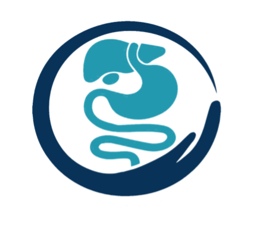

Gastro-Entérologue & Proctologue
Médecin spécialiste en gastro-entérologie et proctologie à Meknès — Hamria. Prise en charge personnalisée et humaine de vos pathologies digestives.

Consultation disponible
Hamria, MeknèsLe Dr Soufiane ESSAHLAOUI est médecin spécialiste en gastro-entérologie et proctologie, exerçant à Meknès dans le quartier de Hamria. Titulaire d'un diplôme de spécialité en gastro-entérologie, il assure le diagnostic et le traitement de l'ensemble des pathologies digestives.
Son approche combine expertise médicale et écoute bienveillante, pour une prise en charge globale et humaine de chaque patient. Il réalise les explorations endoscopiques (coloscopie, fibroscopie), le diagnostic et le traitement des maladies du côlon, de l'œsophage, de l'estomac et de l'anus.
Diplômé spécialiste
Formation universitaireEndoscopie digestive
Coloscopie & FibroscopieApproche personnalisée
Écoute & bienveillanceRDV rapide WhatsApp
+212 720 99 25 19Prise en charge complète des maladies digestives, du diagnostic à la thérapeutique, avec des équipements modernes.
Exploration endoscopique du côlon permettant le diagnostic des polypes, cancers, maladies inflammatoires et saignements digestifs.
Examen de l'œsophage, de l'estomac et du duodénum pour diagnostiquer les ulcères, RGO, gastrites et autres pathologies digestives hautes.
Diagnostic et suivi des hépatites, cirrhose, stéatose hépatique et autres affections hépatiques avec bilan complet.
Traitement des pathologies anorectales : hémorroïdes, fissures anales, fistules, condylomes et autres affections de l'anus et du rectum.
Suivi et traitement des MICI : maladie de Crohn, rectocolite hémorragique, avec protocoles thérapeutiques adaptés.
Consultations préventives et bilans complets pour un dépistage précoce du cancer colorectal et des pathologies digestives.
Reflux gastro-œsophagien
RGO — brûlures, régurgitationsUlcère gastrique & duodénal
Douleurs épigastriques, HelicobacterGastrite chronique
Inflammation de la muqueuse gastriqueHernie hiatale
Remontée de l'estomac dans le thoraxDyspepsie fonctionnelle
Troubles digestifs hauts chroniquesSyndrome de l'intestin irritable
SII — douleurs, ballonnements, transitŒsophagite
Inflammation de l'œsophageTrouble de la déglutition
Dysphagie, sensation de blocageCancer colorectal
Dépistage, diagnostic & suiviPolypes coliques
Ablation et surveillance endoscopiqueMaladie de Crohn
MICI — inflammation chronique intestinaleRectocolite hémorragique
RCH — inflammation du côlon et rectumDiverticulose colique
Diverticules, diverticulite aiguëRectorragies
Saignements rectaux — origine à préciserConstipation chronique
Bilan et prise en charge thérapeutiqueDiarrhée chronique
Origine infectieuse, fonctionnelle ou MICIHépatite B & C chronique
Diagnostic, traitement antiviral, suiviStéatose hépatique (NASH)
Foie gras non alcoolique — bilan métaboliqueCirrhose hépatique
Surveillance et prévention des complicationsLithiase biliaire
Calculs vésiculaires, colique hépatiquePancréatite chronique
Douleurs abdominales, insuffisance pancréatiqueÉlévation des transaminases
Bilan étiologique complet du bilan hépatiqueIctère / Jaunisse
Origine hépatique, biliaire ou hémolytiqueCancer du foie (CHC)
Dépistage chez les patients à risque cirrhotiqueHémorroïdes internes & externes
Traitement médical, instrumentaux ou chirurgicalFissure anale
Douleurs à la défécation, traitement localFistule anale
Trajet fistuleux, écoulement, chirurgieAbcès anal
Drainage urgent, prévention des récidivesCondylomes anaux
HPV — lésions périanales, traitement localProlapsus rectal
Descente du rectum, traitement adaptéPrurit anal
Démangeaisons anales chroniques — étiologieColoscopie totale
Exploration du côlon sous sédationFibroscopie gastrique (FOGD)
Exploration haute : œsophage, estomac, duodénumPolypectomie endoscopique
Ablation de polypes lors de la coloscopieBiopsies digestives
Prélèvements pour analyse anatomopathologiqueTest à l'uréase (CLO test)
Détection de l'Helicobacter pyloriAnuscopie / Rectoscopie
Examen proctologique de première intentionConsultation & bilan préventif
Dépistage cancer colorectal dès 45 ans"Médecin très compétent et à l'écoute. Il m'a bien expliqué mon diagnostic et le traitement à suivre. Je le recommande vivement à toute personne ayant des problèmes digestifs."
"J'ai fait une coloscopie avec le Dr ESSAHLAOUI. Tout s'est très bien passé, l'équipe est professionnelle et rassurante. Les résultats m'ont été bien expliqués. Merci docteur."
"Prise en charge rapide via WhatsApp, très pratique. Le docteur est sérieux, attentionné et disponible. Mes problèmes de reflux sont enfin sous contrôle grâce à son suivi."
Retrouvez les réponses aux questions les plus posées sur nos consultations, examens et modalités de prise en charge.
Poser une question